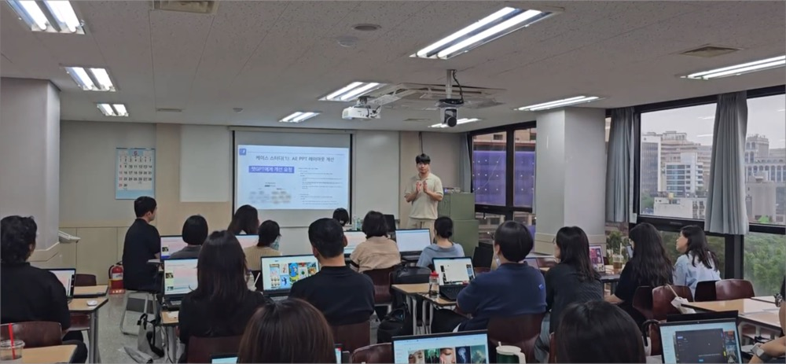
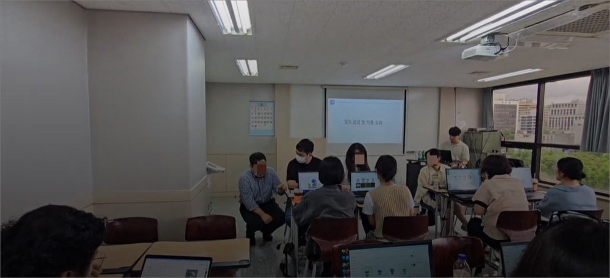
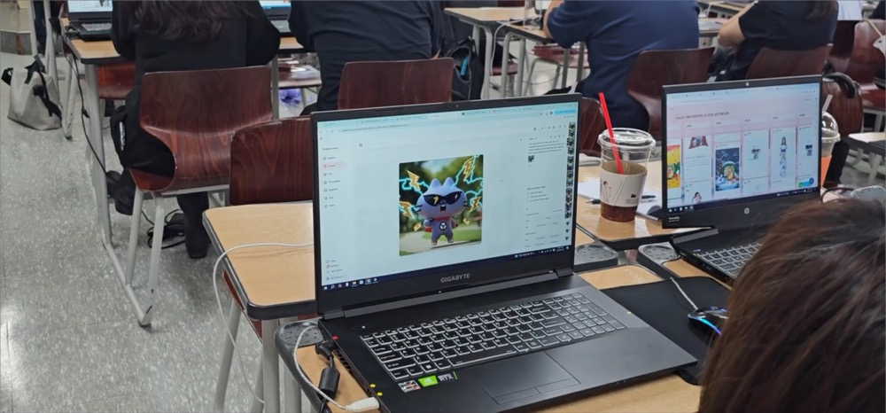
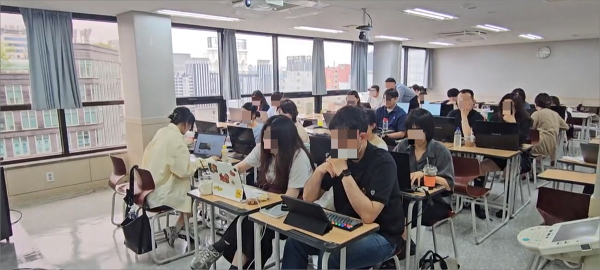
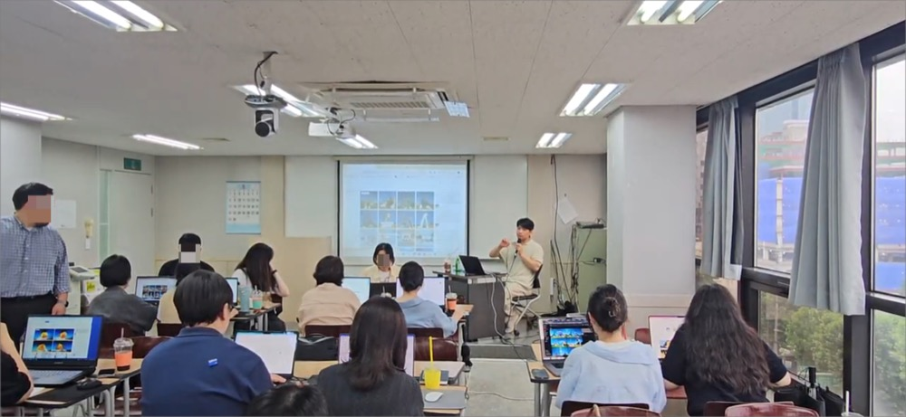
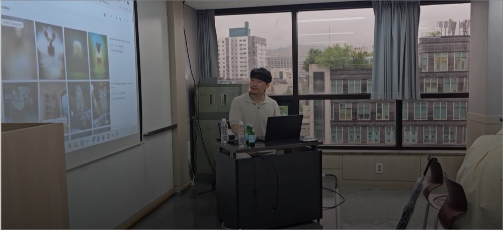
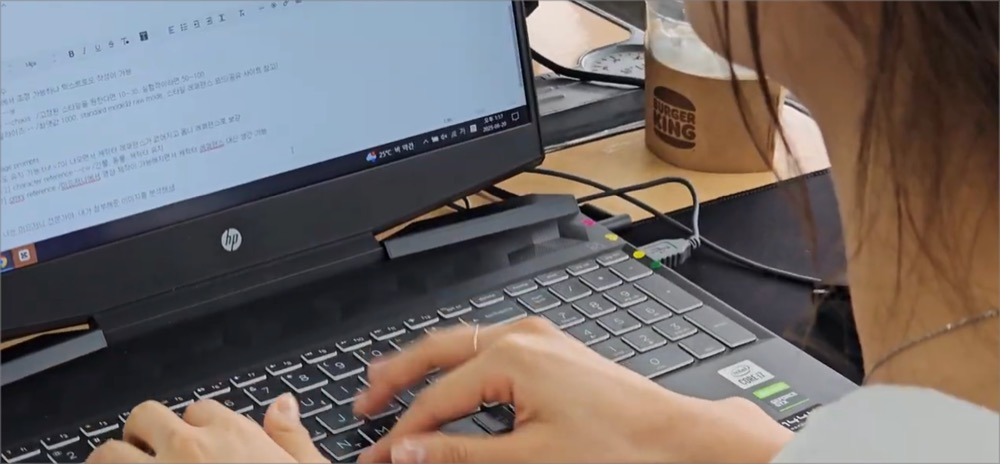
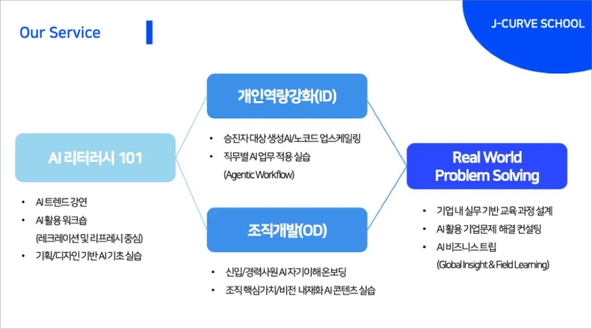

왜 지금, 디자이너에게 AI 교육이 필요할까?
2025년, 디자인 업무는 변하고 있습니다.특히 ‘생성형 AI’의 등장 덕분에, 이 변화는 더욱 가속화되고 있죠. 챗GPT와 미드저니는 이제 단순한 유행이 아닙니다. 디자인 직군의 일하는 방식을 바꾸고 있기 때문입니다.
그리고 이 변화는, ‘디자이너 개인’만의 몫이 아닙니다. 이제는 팀 전체, 나아가 조직의 성과와도 직결됩니다. 그런 점에서, 기업 교육 담당자(HR)가 디자인 직무에 AI 교육을 도입하는 건 단순한 “스킬 업그레이드”와는 차이가 있죠.
"우리 팀의 일하는 방식 자체를 AI 기반으로 재구성하는 일" 처럼, 바로 그 출발점이 될 수 있는데요.
그렇다면, 디자이너가 챗GPT와 미드저니를 배우면 어떤 실질적인 변화가 생길까요? 이번에 팀제이커브가 함께한 YBM 디자인센터 교육에서 그 힌트를 확인할 수 있었습니다.
YBM 디자인센터는 어떤 교육을 받았을까?
YBM 디자인센터의 교육 목표는 명확했습니다.
“AI로 디자인 실무의 생산성과 창의성을 모두 끌어올리는 것.”
이를 위해 팀제이커브는 아래와 같은 커리큘럼을 구성했습니다. 현업에서 바로 활용 가능한, 실전 중심의 프로그램이었죠.
✔️ 주요 교육 구성
1. AI vs 인간 퀴즈
- 이미지·영상 생성 기술의 발전 체감, AI와 사람의 창작물을 비교하며 인식의 전환 유도
2. 2025 생성형 AI 트렌드 브리핑
- 기획-디자인-영상 각 직무에서의 AI 활용 흐름, 최신 툴 소개와 기업 사례 분석

3. Midjourney 기초부터 V7까지 실습
- 스타일 고정, 캐릭터 반복, 드래프트·에디트 모드 등 실무와 연결된 프롬프트 실습 중심

4. AI로 이미지에서 영상까지 전환
- 챗GPT → 미드저니 → 픽스버스 → 슈퍼톤 → 캡컷
5. AI 도구 간 워크플로우 체험

팀제이커브의 지향점과 같이, 이번 교육도 ‘단순히 툴을 배우는 시간’은 아니었습니다. 오히려, “이런 도구를 어떻게 실무에 적용할 수 있지?”라는 질문에 답을 찾는 시간에 가까웠습니다. 그래서일까요? 교육 전후로 참여자들의 눈빛이 확연히 달라졌습니다.
디자이너의 손끝에서 시작된 변화? – 교육 현장 스케치
실습 중심의 커리큘럼이 본격적으로 시작되자, 참여자분들의 집중도는 눈에 띄게 달라졌습니다. 특히 Midjourney 실습 시간. 기존 작업 흐름과는 완전히 다른 방식의 ‘이미지 생성’이 디자이너들에게 큰 자극이 되었죠.
✔️ 챗GPT로 기획, Midjourney로 시각화
참가자들은 챗GPT로 이미지의 ‘기획 의도’를 먼저 정리했습니다. 그 다음, 구체적인 프롬프트를 Midjourney에 입력해 원하는 스타일의 이미지를 직접 생성해보았죠.
“내가 상상한 걸 이렇게 빨리 구현할 수 있다고?”와 같은, 놀라움과 흥미, 그리고 약간의 위기감까지. 다양한 반응이 현장에서 나왔습니다.

✔️ 드래프트 모드와 에디트 기능, 실무 연계력 폭발
특히 Midjourney V7의 ‘드래프트 모드’와 ‘에디트 기능’은 디자인 업무에 바로 쓸 수 있다는 점에서 호응이 컸습니다.
1. 빠르게 다양한 시안을 뽑고 (카드뉴스 시안 5종, 10분 만에 생성)
2. 특정 부분만 수정하여 (기존 삽화 스타일을 유지한 새 표지 제작)
3. 하나의 결과물로 완성시키는 과정 (동일한 캐릭터로 다양한 시즌 비주얼 구성)

기획한 바와 같이, 실무에서 디자이너들이 반복하는 워크플로우와 정확히 맞아떨어졌습니다.
이처럼, AI는 ‘디자이너의 창의력’을 대신하지 않았습니다. 오히려 그 창의력을 더 빠르게, 더 다양하게, 더 쉽게 실현할 수 있도록 도와주는 도구로 작동했죠.
참여자들의 반응은? - "실무에 바로 쓰는 AI"
교육이 끝난 직후, 참여자들의 첫 반응은 "생각보다 더 실무적이다"였습니다. 단순한 기술 시연이 아니라,
'지금 내 업무에 어떻게 쓸 수 있을까?' 라는 질문에 즉각적인 답을 줄 수 있었기 때문일테죠.

✔️ 팀워크에도 변화가 생기다
흥미로운 건, 교육 이후 팀워크의 분위기 변화였습니다. 기획자, 디자이너, 에디터 간의 ‘공통 언어’가 생긴 것처럼
의사소통 속도가 눈에 띄게 빨라졌습니다.
“이 장면, 챗GPT한테 시켜볼까?”
“Midjourney로 미리 시안 뽑아보죠!”

누구 한 명의 일이 아니라, 팀 전체가 AI를 도구처럼 활용하기 시작한 겁니다.
팀제이커브가 항상 추구하는 것처럼, 단순한 AI 트렌드 강연이 아니었습니다. 디자인팀이 AI를 실질적으로 업무에 도입해보는 실습형 프로그램이었죠.
팀제이커브는 이런 조직과 잘 맞습니다
디자인팀을 중심으로 한 이번 AI 교육은 팀제이커브가 가진 역량과 색깔이 잘 드러나는 사례였습니다. 그렇다면, 어떤 조직에 팀제이커브가 잘 맞을까요?
💡 이런 조직이라면 더욱 효과적입니다
"우리 팀에도 AI를 적용해보고 싶은데, 어디서부터 시작해야 할지 모르겠어요"
→ 우리 기업에 맞는, 기초부터 실습까지 단계적으로 설계된 커리큘럼 제공
"툴 교육 말고, 실무에 바로 써야 해요"
→ 챗GPT, Midjourney, Pixverse 등 실전 기반 활용 중심
"교육은 교육인데, 팀워크에도 긍정적인 자극이 있었으면 좋겠어요"
→ 참여형 퀴즈, 실습, 결과 공유 중심으로 설계된 몰입형 워크숍
팀제이커브는 단순한 AI 툴 강의팀이 아닙니다. AI를 통해 ‘조직이 더 잘 일할 수 있게’ 만드는 파트너입니다.
이번 YBM 디자인센터 사례처럼, ‘작은 팀’부터 ‘큰 변화’를 만들 수 있도록 설계합니다.

교육을 고민 중이라면, 가볍게 한 번 문의해보셔도 좋습니다.
우리도, AI 활용해보고 싶다면? 👉 문의하기
왜 지금, 디자이너에게 AI 교육이 필요할까?
2025년, 디자인 업무는 변하고 있습니다.특히 ‘생성형 AI’의 등장 덕분에, 이 변화는 더욱 가속화되고 있죠. 챗GPT와 미드저니는 이제 단순한 유행이 아닙니다. 디자인 직군의 일하는 방식을 바꾸고 있기 때문입니다.
그리고 이 변화는, ‘디자이너 개인’만의 몫이 아닙니다. 이제는 팀 전체, 나아가 조직의 성과와도 직결됩니다. 그런 점에서, 기업 교육 담당자(HR)가 디자인 직무에 AI 교육을 도입하는 건 단순한 “스킬 업그레이드”와는 차이가 있죠.
"우리 팀의 일하는 방식 자체를 AI 기반으로 재구성하는 일" 처럼, 바로 그 출발점이 될 수 있는데요.
그렇다면, 디자이너가 챗GPT와 미드저니를 배우면 어떤 실질적인 변화가 생길까요? 이번에 팀제이커브가 함께한 YBM 디자인센터 교육에서 그 힌트를 확인할 수 있었습니다.
YBM 디자인센터는 어떤 교육을 받았을까?
YBM 디자인센터의 교육 목표는 명확했습니다.
이를 위해 팀제이커브는 아래와 같은 커리큘럼을 구성했습니다. 현업에서 바로 활용 가능한, 실전 중심의 프로그램이었죠.
✔️ 주요 교육 구성
1. AI vs 인간 퀴즈
2. 2025 생성형 AI 트렌드 브리핑

3. Midjourney 기초부터 V7까지 실습

4. AI로 이미지에서 영상까지 전환
5. AI 도구 간 워크플로우 체험

팀제이커브의 지향점과 같이, 이번 교육도 ‘단순히 툴을 배우는 시간’은 아니었습니다. 오히려, “이런 도구를 어떻게 실무에 적용할 수 있지?”라는 질문에 답을 찾는 시간에 가까웠습니다. 그래서일까요? 교육 전후로 참여자들의 눈빛이 확연히 달라졌습니다.
디자이너의 손끝에서 시작된 변화? – 교육 현장 스케치
실습 중심의 커리큘럼이 본격적으로 시작되자, 참여자분들의 집중도는 눈에 띄게 달라졌습니다. 특히 Midjourney 실습 시간. 기존 작업 흐름과는 완전히 다른 방식의 ‘이미지 생성’이 디자이너들에게 큰 자극이 되었죠.
✔️ 챗GPT로 기획, Midjourney로 시각화
참가자들은 챗GPT로 이미지의 ‘기획 의도’를 먼저 정리했습니다. 그 다음, 구체적인 프롬프트를 Midjourney에 입력해 원하는 스타일의 이미지를 직접 생성해보았죠.
“내가 상상한 걸 이렇게 빨리 구현할 수 있다고?”와 같은, 놀라움과 흥미, 그리고 약간의 위기감까지. 다양한 반응이 현장에서 나왔습니다.

✔️ 드래프트 모드와 에디트 기능, 실무 연계력 폭발
특히 Midjourney V7의 ‘드래프트 모드’와 ‘에디트 기능’은 디자인 업무에 바로 쓸 수 있다는 점에서 호응이 컸습니다.
1. 빠르게 다양한 시안을 뽑고 (카드뉴스 시안 5종, 10분 만에 생성)
2. 특정 부분만 수정하여 (기존 삽화 스타일을 유지한 새 표지 제작)
3. 하나의 결과물로 완성시키는 과정 (동일한 캐릭터로 다양한 시즌 비주얼 구성)

기획한 바와 같이, 실무에서 디자이너들이 반복하는 워크플로우와 정확히 맞아떨어졌습니다.
이처럼, AI는 ‘디자이너의 창의력’을 대신하지 않았습니다. 오히려 그 창의력을 더 빠르게, 더 다양하게, 더 쉽게 실현할 수 있도록 도와주는 도구로 작동했죠.
참여자들의 반응은? - "실무에 바로 쓰는 AI"
교육이 끝난 직후, 참여자들의 첫 반응은 "생각보다 더 실무적이다"였습니다. 단순한 기술 시연이 아니라,
'지금 내 업무에 어떻게 쓸 수 있을까?' 라는 질문에 즉각적인 답을 줄 수 있었기 때문일테죠.

✔️ 팀워크에도 변화가 생기다
흥미로운 건, 교육 이후 팀워크의 분위기 변화였습니다. 기획자, 디자이너, 에디터 간의 ‘공통 언어’가 생긴 것처럼
의사소통 속도가 눈에 띄게 빨라졌습니다.
“이 장면, 챗GPT한테 시켜볼까?”
“Midjourney로 미리 시안 뽑아보죠!”

누구 한 명의 일이 아니라, 팀 전체가 AI를 도구처럼 활용하기 시작한 겁니다.
팀제이커브가 항상 추구하는 것처럼, 단순한 AI 트렌드 강연이 아니었습니다. 디자인팀이 AI를 실질적으로 업무에 도입해보는 실습형 프로그램이었죠.
팀제이커브는 이런 조직과 잘 맞습니다
디자인팀을 중심으로 한 이번 AI 교육은 팀제이커브가 가진 역량과 색깔이 잘 드러나는 사례였습니다. 그렇다면, 어떤 조직에 팀제이커브가 잘 맞을까요?
💡 이런 조직이라면 더욱 효과적입니다
팀제이커브는 단순한 AI 툴 강의팀이 아닙니다. AI를 통해 ‘조직이 더 잘 일할 수 있게’ 만드는 파트너입니다.
이번 YBM 디자인센터 사례처럼, ‘작은 팀’부터 ‘큰 변화’를 만들 수 있도록 설계합니다.

교육을 고민 중이라면, 가볍게 한 번 문의해보셔도 좋습니다.
우리도, AI 활용해보고 싶다면? 👉 문의하기